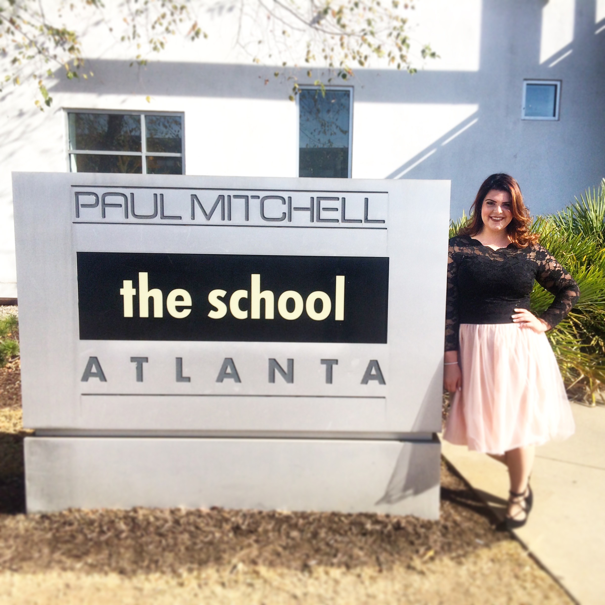

"The future belongs to those who believe in the beauty
of their dreams."
-Elanor Roosevelt
 As of November 2016, I am a Phase Two honor graduate of the master cosmetology program at Paul Mitchell the School Atlanta, where I most enjoyed studying hair color and professional makeup artistry. I graduated as a member of the Design Team, Take-Home Team, as the student manager of the Phase Two Honors Program, and with perfect attendance. My incredible experience there prompted me to merge my lifelong passions for beauty products, public speaking, and people into a career.
I am currently a sophomore at the University of Georgia, majoring in communication studies, minoring in fashion merchandising, and pursuing a certificate in new media. Next year I plan to intern in New York City with one of the world’s top cosmetic brands like Estee Lauder and L'Oreal.
✂For more information on the amazing PMTSA, click the following link:✂
Paul Mitchell the School Atlanta
After graduation, I hope to begin working in communications or marketing in the beauty industry. My dream job is to be a global director of retail events for a Fortune 500 cosmetic company that allows me to travel the world and talk about their products. I can’t fathom any other job description for myself that fits the quote “chose a job you love, and you will never work a day in your life” any better.
| Instagram: | @jcollya, @bulldog_beauty |
| Email: | jessica.collier1996@gmail.com |